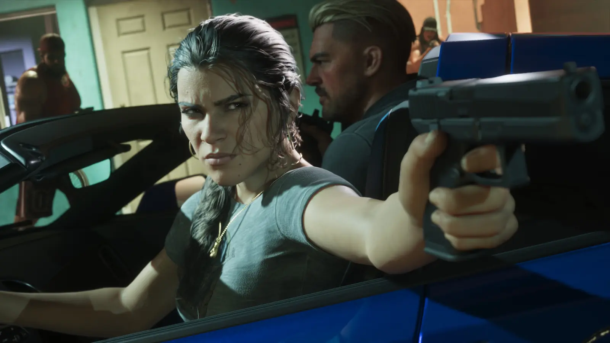

Guía antispoilers
Llega a tu medianoche sin spoilers
GTA 6 sale por países. Cuando en Nueva Zelanda dan las 00:00, en España son las 12:00 del miércoles 18 y en México las 05:00. Desde ese momento hay gente jugando y subiendo vídeos. Estos son los cuatro pasos para que no te destripen nada.
- X: Ajustes → Privacidad y seguridad → Silenciar y bloquear → Palabras silenciadas. Añade GTA 6, GTA VI, Jason, Lucía, final, misión y pon que dure hasta el día 20.
- TikTok: Ajustes → Preferencias de contenido → Filtrar palabras clave. Las mismas palabras, en «Para ti» y en «Siguiendo».
- PS5: Ajustes → Datos guardados y ajustes de juegos y aplicaciones → Avisos de spoilers. Así la consola no te enseña pistas ni capturas de lo que aún no has jugado.
- YouTube: no abras la página de inicio ni los Shorts hasta jugar. Entra directo a los canales en los que confíes. En el de Godca nunca verás un spoiler sin aviso.
Las horas de más riesgo
Las primeras partidas empiezan en Oceanía, siguen por Asia y Europa y terminan en América. Si eres de Latinoamérica, son unas horas de riesgo más que en España. Mira tu hora exacta:
España00:00 en EspañaMéxico07:00 en EspañaArgentina04:00 en EspañaColombia06:00 en EspañaChile04:00 en EspañaPerú06:00 en EspañaVenezuela05:00 en EspañaEcuador06:00 en EspañaUruguay04:00 en EspañaParaguay04:00 en EspañaBolivia05:00 en EspañaRepública Dominicana05:00 en EspañaGuatemala07:00 en EspañaCosta Rica07:00 en EspañaPanamá06:00 en EspañaEl Salvador07:00 en EspañaHonduras07:00 en España
Sin spoilers y con todo el contexto
Subo cada día lo que hay que saber de GTA 6 avisando siempre antes de cualquier spoiler.
Suscríbete a Godca en YouTube